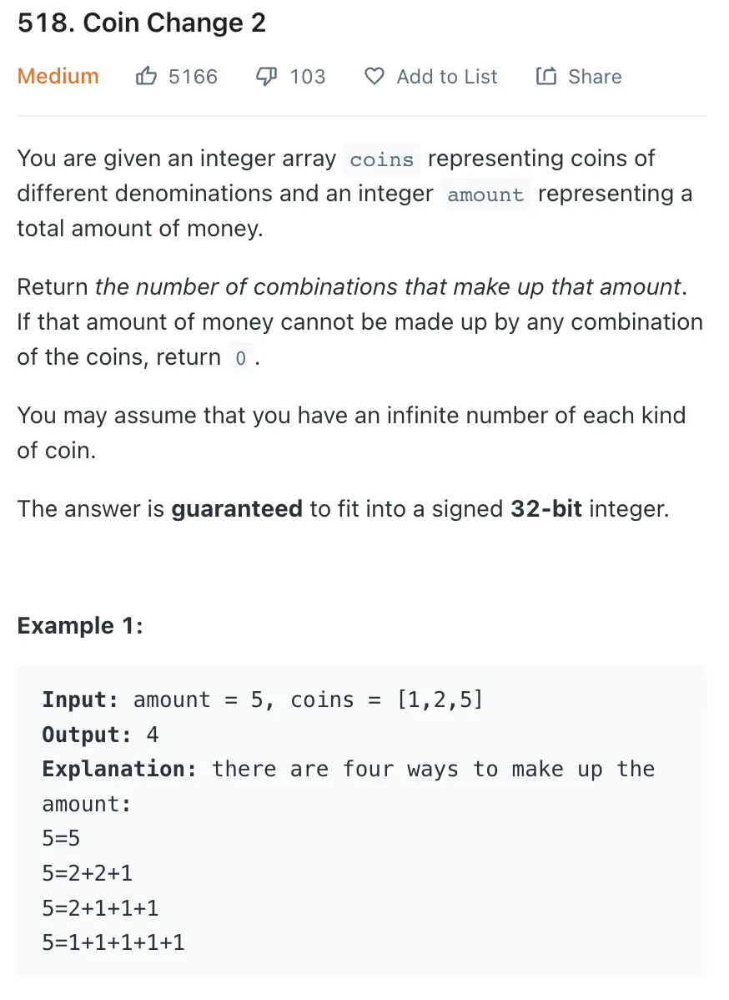
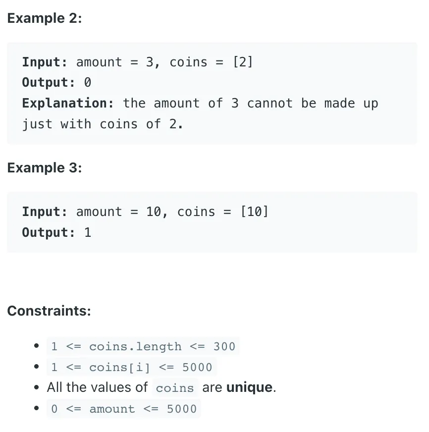

518. Coin Change 2
考過的公司：Asked by: Amazon, Bytedance, Google
Question


先自己想想看 🤔Try it yourself first 🤔
✍🏽 My Solution
Runtime: 2 ms, faster than 99.27% of Java online submissions for Coin Change 2.
Memory Usage: 39.9 MB, less than 90.67% of Java online submissions for Coin Change 2.
class Solution {
public int change(int amount, int[] coins) {
int[] dp = new int[amount + 1];
dp[0] = 1;
for (int coin : coins) {
for (int i = coin; i <= amount; i++) {
dp[i] += dp[i - coin];
}
}
return dp[amount];
}
}
🧠 Thought Process
- Why did I choose this particular implementation?
- 零钱兑换II和爬楼梯问题到底有什么不同？
- 因为这是个组合问题，我们不关心硬币使用的顺序，而是硬币有没有被用到 。是否使用第k个硬币受到之前情况的影响。
- 正确的子问题定义应该是，problem(k,i) = problem(k-1, i) + problem(k, i-coins[k]) 即前k个硬币凑齐金额i的组合数等于前k-1个硬币凑齐金额i的组合数加上在原来i-k的基础上使用硬币的组合数。 说的更加直白一点，那就是用前k的硬币凑齐金额i，要分为两种情况计算， 一种是没有用第K个硬币就凑齐了，一种是前面已经凑到了i-coins[k]，现在就差第k个硬币了。
-
此状态数组
DP[i]表示的是对于第k个硬币能凑的组合数状态转移方程：
DP[[i] = DP[i] + DP[i-k]
Solution #1 [王爭-DP二維數組]
class Solution {
public int change(int amount, int[] coins) {
int n = coins.length;
// 第i个硬币决策完之后，凑足金额j需要的最少硬币数dp[i][j]
int[][] dp = new int[n][amount+1];
for (int c = 0; c <= amount/coins[0]; c++) {
dp[0][c * coins[0]] = 1;
}
for (int i = 1; i < n; ++i) { // 动态规划状态转移
for (int j = 0; j <= amount; ++j) {
int k = j / coins[i];
for (int c = 0; c <= k; ++c) {
dp[i][j] += dp[i-1][j-c*coins[i]];
}
}
}
return dp[n-1][amount]; // 跟「最值」類型只差在這一行，判斷最最終狀態可不可達
}
}